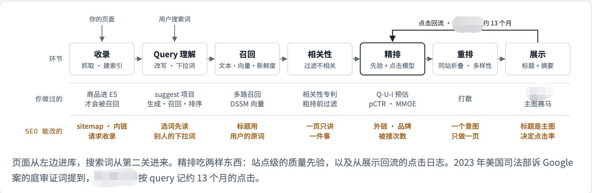

做 SEO 和 GEO，我把 15 家一手资料分了工
每家只看它最擅长的那一块（有些我也是第一次听说）
1️⃣ Google 讲自己怎么处理网址
2️⃣ Ahrefs 讲从选词到外链怎么干活
3️⃣ Similarweb 讲点击最后落在谁手里
4️⃣ Semrush 讲结果页和 AI 回答被谁占着
5️⃣ Moz 讲先做什么后做什么，以及怎么从外面猜一个站的起点分
6️⃣ Screaming Frog 讲收录那一段在自己站里怎么逐项查
7️⃣ Siege Media 讲 AI 回答里推荐谁、引用谁
8️⃣ SEJ 讲每个说法的证据有多硬、是哪一年的
9️⃣ Search Engine Land 讲 AI 回答这一段，外面的人量到了什么
🔟 GEO 论文讲 AI 怎么在几个来源之间分笔墨，改写网页能不能改变它
1️⃣1️⃣ Backlinko 讲第一页的页长什么样、点击率曲线大概什么形状
1️⃣2️⃣ Bing 讲第二个索引，和它给 AI 回答当证据库以后定的规矩
1️⃣3️⃣ 百度讲谁有资格被收录，和每个算法罚什么
1️⃣4️⃣ Yandex 讲引擎自己承认的点击学习回路
1️⃣5️⃣ Naver 讲一种先排自家平台内容、外部网站排在后面的结果页
别什么都问同一个来源，问对人比读得多更重要
引用帖：搜广推视角下的 SEO 与 GEO
搜广推视角下的 SEO 与 GEO
忘记了自己是做搜广推的，应该走自己的路
Google 给网页排序，AI 联网回答问题，用的都是你做过的那套东西：召回、排序、点击反馈、质量分
区别在于你现在站在商品这一侧，能改的只有自己页面的特征，外加挑哪些词去做
SEO：你的页面是 Google 搜索系统里的一个商品，要依次过收录、召回、相关性、精排、重排、展示这几关，排完还会被点击日志反过来修正
GEO：AI 联网回答是一条检索加生成的链路，第一关仍是搜索召回，最后一关是模型挑哪几句话来引用
广告：视角自然结果像一个不收钱的竞价位，只比质量。AI 回答像一个只出几条的原生位，只能以内容的身份进去

引用帖原文：搜广推视角下的 SEO 与 GEO
该引用帖中还引用了更早的一篇：原文